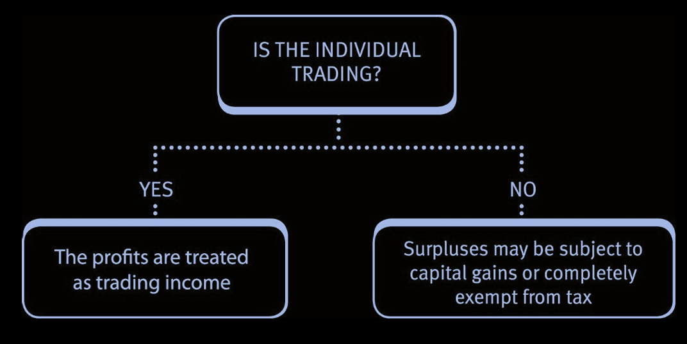
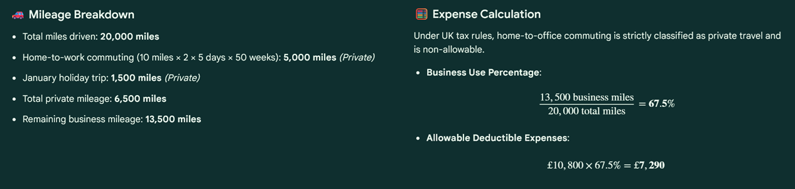
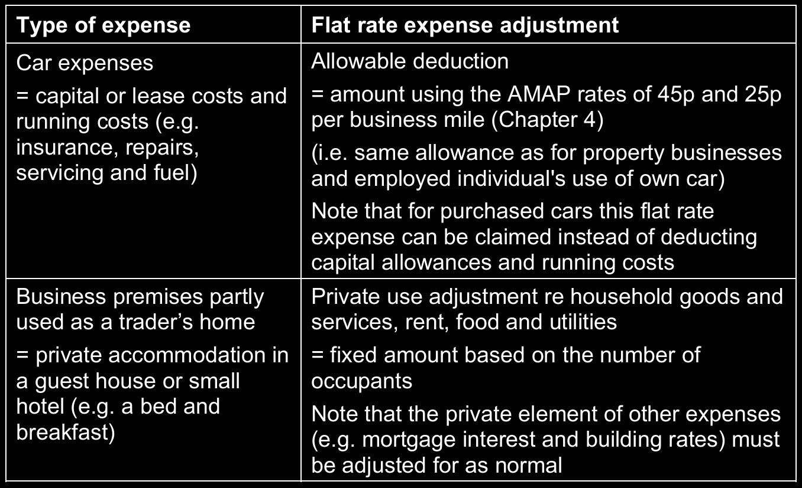

Chapter 7: Income from self-employment
recognise the basis of assessment for self-employment income under both cash and accruals bases.
describe and apply the badges of trade.
recognise the expenditure that is allowable in calculating the tax adjusted trading profit.
recognise the relief which can be obtained for pre-trading expenditure.
Income from self-employment
Basis of assessment for self-employment
The profits of an unincorporated trader arising from a trade, profession or vocation are taxed as trading income.
Individuals with an unincorporated business are usually referred to as ‘self-employed’ or ‘sole traders’.
For tax years up to 2022/23 profits of an ongoing business were taxed on a current year basis (CYB), i.e. the trading income taxed in a particular tax year were the profits of the 12-month accounting period ending in that tax year.
This basis of assessment is no longer examinable.
Tax year 2023/24: Transitional year
To move from one system to the other, businesses with accounting dates not aligned to 31 March/5 April had to bring extra months of profit into charge. These extra profits are called transition profits.
For the tax year 2023/24 transitional rules applied. These are special rules for taxing the profits of any business where the accounting period is not aligned with the tax year, i.e. any business that did not have an accounting period ending on 5 April or 31 March.
Additional transition profits may have arisen that will automatically be spread over five years. There was also an option to override the five year spreading of transition profits and tax the full amount in 2023/24.
You are only required to have an awareness of basis period reform and that transition profits will be taxed in the future.
The calculation of transition profits and the election to override the five year spreading are not examinable in the TX exam. Furthermore, the interaction between transition profits and the annual allowance, the child benefit tax charge and the restriction on income tax reliefs set against other income are not examinable.
In the TX examination, you may be given the amount of transition profits and be required to tax these in any of the tax years 2025/26 to 2027/28:
- One fifth of the transition profits will be taxed in each of these years.
- The transition profits are included as a separate amount of non-savings income in the income tax computation.
- The transition profits may impact on the availability of the personal allowance.
Tax year 2024/25 onwards: Tax year basis
For the tax year 2024/25 onwards the profits of an unincorporated business are taxed on a tax year basis. This means that where the accounting year end date is different to the tax year end date, profits of the relevant accounting periods will be time apportioned to calculate the trading income arising in the tax year.
- If a business does not have a 31 March/5 April year end the trading profits must be time apportioned to calculate those arising in the tax year.
- For a business commencing during 2025/26 the assessment will run from date of commencement to 5 April 2026.
- For a business ceasing to trade during 2025/26 the assessment will run from 6 April 2025 to date of cessation.
The calculation of time apportioned profits may involve using estimated figures for the second accounting period, for which accounts may not yet be prepared by the tax return filing date 31 January 2027 for the 2025/26 tax year.
Once profits are finalised the self-assessment tax return will need to be amended, which can be done within 12 months of the filing date.
Example 1: Tax year basis
Foday has always prepared accounts to 31 July each year. His trading profits for the year ended 31 July 2025 are £65,000 and for the year ended 31 July 2026 are £79,000.
He has transition profits of £7,000 to be taxed in the tax year 2025/26.
Calculate the amount of Foday’s taxable income for the tax year 2025/26.
Solution
| £ | |
|---|---|
| Trading income (£65,000 × 4/12) + (£79,000 × 8/12) | 74,333 |
| Transition profits | 7,000 |
| Total income | 81,333 |
| Less: PA | (12,570) |
| Taxable income | 68,763 |
Example 2: Tax year basis
Franklin has always prepared accounts to 31 March each year. His trading profits for the year ended 31 March 2025 are £92,000 and for the year ended 31 March 2026 are £97,000.
Layei has always prepared accounts to 30 September each year. Her trading profits for the year ended 30 September 2025 are £29,000 and for the year ended 30 September 2026 are £36,000.
She has transition profits of £2,500 to be taxed in the tax year 2025/26.
Calculate the amount of Franklin and Layei’s total income for the tax year 2025/26.
Solution
Franklin
| £ | |
|---|---|
| Trading income | 97,000 |
| Total income | 97,000 |
Layei
| £ | |
|---|---|
| Trading income ((£29,000 × 6/12) + (£36,000 × 6/12)) | 32,500 |
| Transition profits | 2,500 |
| Total income | 35,000 |
Badges of trade

To determine whether an individual is trading, a number of tests, known as the ‘badges of trade’, are considered.
Nature of trade
‘Trade includes any venture in the nature of trade.’
Although the above is the statutory definition of a trade, in practice it is not a very helpful one. What constitutes a trade has been reviewed numerous times by the courts and criteria have been developed and were set out by a Royal Commission. These criteria which should be considered are known as the ‘badges of trade’.
The badges of trade which are used to determine if an activity is in the nature of a trade are as follows (and can be remembered by using two mnemonics ‘SOFIRM’, and ‘FAST’ as indicated by the letters in the brackets below):
- The subject matter of the transaction (S).
- are the goods of a type normally used for trading?
- The length of the period of ownership (O).
- a short period of ownership is more likely to indicate trading.
- The frequency of similar transactions by the same person (F).
- frequent transactions indicate trading.
- Supplementary work, improvements and marketing (I).
- work performed on goods to make them more marketable indicates trading.
- The circumstances/reason for the sale (R).
- a forced sale to raise cash indicates not trading.
- The motive (M).
- intention to profit may indicate trading.
In addition to the original six badges of trade mentioned above, HM Revenue & Customs (HMRC) guidance states that the following are also considered to indicate trading:
- Finance (F)
- where the taxpayer took out a loan to buy the asset and expects to repay the loan from the proceeds of sale.
- Method of acquisition (A)
- where the taxpayer acquired the asset by way of purchase rather than receiving it as a gift or by inheritance.
- Existence of similar trading transactions (ST)
- where the transactions are similar to those of an existing trade carried on by the taxpayer.
It is vital to appreciate that no one badge is decisive. In any set of circumstances some badges may indicate trading whilst others may not.
It is the overall impression, considering all relevant factors, that is important.
Subject matter of the transaction (S)
An asset is said to have been acquired for one of three reasons:
- an investment – capital in nature and not subject to income tax
- goods for private use of the individual (or family) – not subject to tax
- trade inventory – a trading transaction and subject to income tax.
When an individual acquired 1,000,000 rolls of toilet paper and resold them at a profit, he was held not to have acquired them for private use, or as an investment and consequently was judged to have made a trading profit.
When deciding tax treatment, you look at the purpose of acquisition. If it doesn’t fit private use or investment, then large‑scale purchases for resale are treated as trading — and profits are taxed accordingly.
The length of the period of ownership (O)
As a general rule, the longer the period between acquisition and disposal, the more likely the transaction will not be treated as trading.
Care must be taken in applying this principle and in particular the nature of the asset has to be considered.
For instance, it would be necessary to hold land for far longer than quoted shares to obtain the benefit of this rule, since normally the market in land operates much more slowly than that in shares.
The frequency of similar transactions by the same person (F)
As in the toilet rolls case above, a single transaction may be regarded as trading. However, usually the more often similar transactions are entered into, the more likely they will be regarded as trading activities.
Again, the nature of the assets involved is important:
- A taxpayer was held to be trading on the evidence of over 200 Stock Exchange sales and purchases over a period of three years.
- A taxpayer was engaged in buying the shares of mill-owning companies and then selling the assets of the companies (asset stripping).
One transaction of this kind might have been regarded as capital, but when he had done the same thing four times, he was held to be trading.
Supplementary work, improvements and marketing (I)
For example, the purchase of brandy in bulk and subsequent blending and re-casking before resale was held to be a trade.
The circumstances/reason for the sale (R)
A ‘forced sale’ where an asset is sold as a consequence of unforeseen circumstances, such as a sudden need for funds, is unlikely to be treated as a trading activity.
The motive (M)
The more obvious an individual’s intention to profit from a transaction the more likely it is that it will be viewed as trading.
For example, an individual purchased a large quantity of silver bullion as a hedge against the devaluation of sterling. The profit resulting from its resale was regarded as a trading profit, on the basis that the motive for the transaction was to make a profit in sterling terms.
It is important to appreciate, however, that the absence of a profit motive does not of itself preclude the transaction from being treated as trade.
Finance (F)
Where it is necessary to take out a loan to fund the purchase of an asset and it is expected that the loan will only be repaid when the asset is sold then this is an indication of trading.
An individual who took out a loan to acquire silver bullion at a high interest rate and in circumstances where it was clear that he would need to sell the asset in the short term to repay the loan was held to be trading.
Method of acquisition (A)
It is much harder to argue that a trade exists where an asset is acquired by gift or inheritance than if the taxpayer purchases it.
In such cases HMRC must demonstrate that before the sale of the asset the taxpayer had a change of intention such that the asset had become trading inventory (e.g. where land is developed for sale).
Existence of similar trading transactions (ST)
Where an individual undertakes a transaction that is related to an existing trade it is more difficult to argue that this is not a trading transaction than if the transaction was not so related.
Thus, it is harder for a property developer to argue that a property was acquired for investment and not trading purposes than a butcher.
Taxable trading profits
Unincorporated businesses (i.e. sole traders and partnerships) can calculate taxable trading profits/losses on either:
- the cash basis (by default), or
- the accruals basis (by election).
The cash basis is not available to:
- companies, or
- limited liability partnerships (LLPs).
The TX examining team has confirmed that in all questions involving sole traders and partnerships, it should be assumed that the cash basis applies unless the question states otherwise.
Cash basis
The cash basis is the default method of calculating trading profits.
Calculating trading profits under the cash basis
Under the cash basis, trading profits are calculated for each accounting period as follows:
| £ | |
|---|---|
| Trading receipts (including sale of equipment) | X |
| Less: Allowable expenses paid (including purchase of equipment) | (X) |
| Taxable trading profits before capital allowances | X |
| Less: Capital allowances: | |
| Cars only (unless mileage allowance claimed) | (X) |
| Taxable trading profits/(loss) after capital allowances | X |
There is no distinction between capital and revenue expenditure for tax purposes, therefore capital assets are treated as follows:
- Purchases are allowable deductions when paid for and proceeds are treated as taxable cash receipts when the asset is sold (except for cars, land and buildings)
- If there is any private use by an owner of the business, it is just the business proportion of cost/proceeds that will be deducted/taxed.
- Capital allowances are available for expenditure on cars only; or the flat rate mileage allowance can be claimed instead.
- There is no tax relief against profits for purchases of land and buildings; structures and buildings allowances are not available.
The key advantages of the cash basis are: - Simpler accounting requirements as there is no need to account for receivables, payables and inventory. - Profit is not accounted for (and taxed) until it is realised and therefore cash is available to pay the associated tax liability.
However, the main disadvantage is that: - Expenses are only deductible when actually paid.
Note that although the cash basis is simpler and may provide a cashflow advantage, for some businesses it may not be possible to use this basis if banks or other lenders insist on the accruals basis being used.
Disallowable (non-deductible) expenditure under the cash basis
In tax law, not all expenses that are acceptable for accounting purposes can be deducted from trading profits.
Therefore, several expenses may not be deductible when calculating the taxable trading profit (also known as the tax adjusted trading profit). If you are starting from a provided profit figure, then the disallowable expenditure will need to be added back when adjusting that profit.
The general rule to follow in deciding whether expenditure is an allowable deduction from trading profits is that only expenditure incurred wholly and exclusively for the purposes of the trade is allowable.
Expenditure may be disallowed because:
- it is too remote from the purposes of the trade – the remoteness test.
- it has more than one purpose and one of them is not trading – the duality principle.
Remoteness test
Expenditure is regarded as being too remote from the trade when it is incurred in some capacity other than that of trading. For example, normal accountancy and compliance taxation fees are allowable, but the cost of any personal tax advice work is not.
Duality principle
The duality principle is best illustrated by decided cases:
A self-employed trader was unable to eat lunch at home and claimed the extra cost of eating out as a tax allowable expense. It was held that the expenditure was not allowable.
The duality of purpose lay in the fact that the taxpayer needed to eat to live, not just to work.A self-employed barrister was refused a tax allowable expense for her expenditure on the black clothing necessary for court appearances. It was held that the expenditure had been for her personal as well as professional needs.
Where expenditure has been incurred for both trading and non-trading purposes, a deduction can be claimed for the business use proportion, provided it can be separately identified. This is particularly relevant to expenditure on cars, where business and private mileage can be identified.
Appropriations
Appropriations are the withdrawal of funds from a business (i.e. profit extraction rather than expenses incurred in earning them) and, as such, are disallowed expenses. The most common examples are:
- interest paid to the owner on capital invested in the business
- salary/drawings taken by a sole trader or partner
- any private element of expenditure relating to the owner’s car, telephone etc.
Example 1: Car expenses
Jim is a self-employed solicitor. During the year ended 31 March 2026, Jim drove a total of 20,000 miles and his car expenses amounted to £10,800.
Each working day Jim drives from his home to his office, which is ten miles away. He works five days a week and 50 weeks a year. Jim drove 1,500 miles on a holiday in January 2026, but for the rest of the year his wife’s car was used for private journeys. Jim’s wife owns her own car and is not involved in Jim’s business.
Calculate the amount of Jim’s car expenses that are allowable
Solution

Excessive salary paid to a sole trader’s family (Appropriated)
- Business owners (especially sole traders) often employ their spouses or members of their families in their business.
- Any salary paid to the family of the owner of an unincorporated business is allowable provided it is not excessive. In other words, it must be remuneration at the commercial rate for the work performed. Any excessive salary payments are disallowed.
Example 2: Trader’s family
Sheila is in business running her own advertising agency. Her husband Richard has given up work to look after their daughter who was born three years ago.
Until 2025 Sheila employed a part-time typist, who was paid £4,500 p.a. but the typist then left and Sheila could not find a suitable replacement. Richard therefore agreed to do Sheila’s typing at home. During the year ended 5 April 2026, Sheila paid Richard a salary of £10,000.
Explain the disallowable amount of Richard’s salary in calculating the taxable trading profit for the year ended 5 April 2026.
Solution
Richard’s salary of £10,000 appears to be excessive, and a disallowance of £5,500 (£10,000 – £4,500) is probably appropriate.
Allowable vs. Disallowable expenditure
Interest payable
- Interest on borrowings such as business account overdrafts, credit cards or hire purchase contracts, is an allowable trading expense.
- For unincorporated businesses, late payment interest charged by HMRC in respect of late paid income tax or capital gains tax is never allowable and likewise repayment interest paid by HMRC is not taxable.
Subscriptions and donations
Trade or professional subscriptions are normally deductible since they are made wholly and exclusively for the purposes of the trade. However, a non-trade subscription, e.g. to a members’ club, would be disallowable.
A charitable donation must meet three tests to be allowable. It must be:
wholly and exclusively for trading purposes (for example, promoting the business name)
local and reasonable in size in relation to the business making the donation, and made to a registered charity.
If the donation is disallowed but the payment was made to a charity, the taxpayer can instead claim relief under the gift aid provisions.
Subscriptions and donations to political parties are disallowed.
Entertaining and gifts
- Entertainment expenditure is disallowed.
- The only exception is for expenditure relating to employees, provided it is not incidental to the entertainment of others.
Gifts to employees
- Gifts to employees are normally treated as allowable for the employer.
- Care must be taken, however, as the gift may fall within the benefit rules and be assessed on the employee as employment income.
Gifts to customers
Gifts to customers are only allowable if:
- they cost less than £50 per recipient per year, and
- the gift is not of food, drink, tobacco or vouchers exchangeable for goods, and
- the gift carries a conspicuous advertisement of the business making the gift.
The cost of a gift that does not meet all three conditions is disallowed.
If the total of gifts to one customer in the tax year exceeds £50, it is the total cost of the gifts that is disallowable, not just the excess.
Gifts of business samples to advertise goods to the public are allowable.
Land and buildings
The purchase of land and buildings is not deductible and the structures and buildings allowance is not available under the cash basis.
Legal and professional charges
In order to determine whether legal and professional charges are allowable, it is important to review the reasons for the business incurring the costs.
As a general principle, where expenditure is incurred for the purposes of the trade, the expenditure is allowable. For example, legal fees relating to chasing trading debts.
Where expenditure is of a capital nature, it is disallowable if it relates to land and buildings or cars. The only exception to this is the following:
- The expense of renewing a short lease (i.e. less than 50 years) is allowable (as this is deemed to be revenue expenditure, rather than capital expenditure), although the legal expenses incurred on the initial granting of the lease are not.
Relief for pre-trading expenditure
Any revenue expenditure, incurred in the seven years before a business starts to trade, which would have been allowable if the business was trading, is treated as an expense on the day that the business starts trading.
Example 1: Relief for pre-trading expenditure
Able started trading on 1 April 2025. They had spent £6,000 in the previous six months advertising that they were about to start trading.
Explain how the expenditure of £6,000 on advertising is treated for tax purposes.
Solution
The £6,000 advertising expenditure is treated as a trading expense as if it had been incurred on 1 April 2025.
Deductible expenditure not charged in the accounts
The most important item of deductible expenditure not charged in the accounts is the figure for capital allowances. These are deductible as if they were a trading expense.
In addition to this, other examples include:
- where a business owner’s private residence is used partly for business purposes (e.g. a room in the owner’s house is used as an office), the business portion of running expenses is allowable.
- business calls from the private telephone of the sole trader.
- expenses that are wholly and exclusively for the trade that have been met from the private funds of the owner.
Example 2: Use of home for business
Florencia is in business as a central heating engineer. She uses one of the five rooms in her house as an office, and no adjustment has been made in her accounts for the year ended 5 April 2026, in respect of this.
Her household expenses relating to the year ended 5 April 2026 are:
| Expense | £ |
|---|---|
| Utilities | 1,100 |
| Television repairs | 50 |
| Groceries | 600 |
| Mortgage interest on £20,000 mortgage | 900 |
Calculate the amount Florencia can claim as an allowable deduction for her use of an office at home.
Solution
As Florencia uses one room out of five as an office, it is appropriate to allow one fifth of her expenses that relate to running the home.
Florencia’s television repairs and groceries are all of a private nature and are therefore not deductible.
The total of the remaining items is £2,000 (£1,100 + £900).
Therefore, Florencia’s allowable deduction for the use of the office is £400 (£2,000 × 1/5).
There are three categories of income which should not be included in the calculation of taxable trading profit, and which therefore need to be adjusted for:
- Capital receipts re land (which may be treated as chargeable gains).
- Other forms of income (such as savings income, property income or dividends) must be deducted in arriving at the taxable trading profit.
However, they may be subject to income tax by being included elsewhere in an individual’s income tax computation. - Income that is exempt from tax (such as interest received on overpaid income tax).
Flat rate expenses
Any unincorporated business can:
opt to use flat rate expense adjustments to replace the calculation of actual costs incurred in respect of certain expenses.
Flat rate expenses can be used under either the cash basis or the accruals basis.
The TX examining team has confirmed that in all questions involving sole traders and partnerships you will be told whether to use flat rate expenses or actual expenses.
The flat rate expense adjustments that are examinable are as follows:

The AMAP rates are included in the tax rates and allowances provided to you in the examination.
Example 1: Cash basis and flat rate expenses
Juliet has the following receipts and payments for her business for the year ended 31 March 2026.
| Expense | £ |
|---|---|
| Cash receipts from customers (includes £900 due on 17 April 2026 that was actually received on 31 March 2026) | 27,000 |
| Cash purchases (includes £400 on decorating work carried out in March that was paid for on 7 April 2026) | 9,000 |
| Lease costs of a car used by an employee 60% for business purposes; 40% for private purposes | 900 |
| Purchase of a car used by Juliet 70% for business purposes and 30% for private purposes | 29,500 |
| Interest paid on a loan taken out to fund working capital | 1,200 |
Juliet claims the fixed rate mileage allowance and drove 22,000 miles during the year ended 31 March 2026.
Calculate Juliet’s taxable trading profit for the year ended 31 March 2026.
Solution
Accruals basis
If a sole trader is using the accruals basis then a different approach must be taken to calculate tax adjusted trading profits for an accounting period, as follows:
| £ | |
|---|---|
| Accounting net profit | X |
| Add: | X |
| 1. Expenditure not allowed for taxation purposes | X |
| 2. Expenditure allowable for taxation purposes | 0 |
| 3. Taxable trading income not credited in the accounts | X |
| Less: | |
| 1. Expenditure not charged in the accounts but allowable for taxation purposes | (X) |
| 2. Income included in the accounts that is not taxable as trading income (as for cash basis) | (X) |
| 3. Capital allowances | (X) |
| Tax adjusted trading profit | X |
The above pro forma is a suggested pro forma that will help you to obtain full marks in these questions.
The TX examining team has confirmed that the question requirement will specify the figure to start with in the tax adjusted trading profit computation.
This will normally be the net profit figure from the statement of profit or loss. Adjustments should be listed in the order in which the items appear in the question.
In order to obtain full marks, in addition to the adjustments required, you should also show all items of expenditure which do not require any adjustment in your answer, and indicate by the use of a 0 that these items are allowable.
It is not necessary to add any explanatory notes to your answer, unless notes are specifically requested by the question.
Adjustments
There are four types of adjustment that need to be made to move from the accounting profit to the tax adjusted trading profit as follows:
| Reason for adjusting profits | Adjustment required |
|---|---|
| Expenditure which tax law prevents from being an allowable deduction may be charged in the statement of profit or loss | Add back to accounting profit (all of the disallowable expenses under the cash basis apply as well as the items listed in this section) |
| Taxable trading income may not be included in the statement of profit or loss | Add to accounting profit |
| Expenditure that is deductible for tax purposes may not be charged in the statement of profit or loss | Deduct from accounting profit |
| Income may be included in the statement of profit or loss that is not taxable as trading income | Deduct from accounting profit |
Remember that as you are starting from the accounting profit, you are adjusting for items which have already been accounted for, and are reversing what went through the statement of profit or loss.
Therefore, disallowed expenses already charged in the accounts are added back to the accounting profit.
Before considering the adjustments in detail, two important points need to be emphasised:
- We are only calculating the taxable trading profit here. The fact that an item of income (such as rental income) is excluded in calculating the tax adjusted trading profit, does not mean that it is not taxable. It just means that it is not taxable as trading income.
As we learned in Chapter 4, rental income is taxable as property business income and comes into the income tax computation as a separate source of income. - In deciding whether or not an adjustment is necessary, the principles of normal commercial accountancy will apply unless overridden by tax law (i.e. if an item is allowed for accounting; it is allowed for tax unless there is a provision in tax law requiring an adjustment).
Capital expenditure
- Expenditure on capital assets is not an allowable trading expense under the accruals basis.
- Any expense in the form of depreciation, loss on sale of non-current assets or the amortisation of a lease is also disallowed.
The distinction between revenue expenditure (allowable – and sometimes referred to as simply ‘expenses’) and capital expenditure (disallowable – and sometimes referred to as ‘asset expenditure’) is not always clear cut.
This is especially the case when deciding if expenditure is in respect of a repair to an asset (revenue expenditure) or is an improvement (capital expenditure).
Repair v Improvement
Whilst you are not required to know the legal cases from which the following decisions were reached, it is important to understand the legal principles behind case decisions regarding capital expenditure as this will help with examination questions:
- The cost of initial repairs in order to make an asset usable is disallowed.
For example, a taxpayer failed to obtain a deduction for repair work on a newly bought ship, in order to make the ship seaworthy. - The cost of initial repairs is allowed if the asset can be put into use before any repairs are carried out.
For example, a taxpayer obtained a deduction for the cost of renovating newly acquired cinemas. The work was to make good normal wear and tear and the purchase price was not reduced to take account of the necessary repair work. - The treatment of restoration costs is another disputed area. To be allowable, it needs to be proven that the restoration renews a subsidiary part of an asset, rather than replacing the entire asset.
For example, the replacement of a factory chimney was held to be a repair to the factory.
Where it is deemed as the renewal/replacement of a separate asset it is treated as disallowed capital expenditure.
For example, the replacement of an old stand with a new one at a football club, was held to be expenditure on a new asset and thus capital expenditure. - The use of modern materials as part of a repair is allowable. For example, replacing single glazed windows with double glazed windows.
Capital expenditure on plant and machinery and structures and buildings is disallowed but may qualify for capital allowances.
These are effectively a form of depreciation allowance for tax purposes. Capital allowances are covered in detail in Chapter 8.
Allowable vs. Disallowable expenditure
Car leasing
- Rental and lease charges payable in respect of leased cars are allowable where the CO2 emissions of the car are 50g/km or less.
- Where CO2 emissions exceed 50g/km, 15% of the rental/lease charges are disallowed.
- If the leased car is used by the sole trader partly for business and partly for private use, then there will also be a disallowance for the private use.
Note that the 15% disallowance is not examinable under the cash basis.
Example 1: Car leasing
Ammanuel enters into a leasing contract for a car with CO2 emissions of 58g/km, paying £8,000 p.a. in rental charges.
Calculate the amount of the rental charge that is disallowed.
Solution
Disallowable rental charge = (15% × £8,000) = £1,200
Legal and professional charges
As for the cash basis, where expenditure is incurred for the purposes of the trade, the expenditure is allowable.
Where expenditure is of a capital nature, it is disallowable. For example:
Fees associated with acquiring new non-current assets.
There are the following exceptions:
- Fees and other costs of obtaining long-term debt finance (such as a loan arrangement fee) are allowable for a sole trader.
- As for the cash basis, the expense of renewing a short lease (i.e. less than 50 years) is allowable, although the legal expenses incurred on the initial granting of the lease are not.
Impairment losses and allowances for trade receivables
The following are allowable items: - The write-off of a trade debt.
Note that the recovery of a trade debt previously written off, is taxable. - An allowance for the irrecoverability or impairment of trade receivables, provided it is calculated in accordance with UK generally accepted accounting practice (UK GAAP) or International Financial Reporting Standards (IFRS® Standards). Similarly, the reduction of such an allowance is taxable income.
The following items are disallowable:
- The write-off of a non-trade debt (e.g. a loan to a customer or a former employee).
Example 2: Impaired debts and allowances for receivables
Catalina’s statement of profit or loss for the year ended 31 March 2026 includes a figure for impaired debts of £300. This is made up of:
| Description | £ | £ |
|---|---|---|
| Trade debts written off | 520 | |
| Loan to former employee written off | 280 | |
| Allowance for impaired receivables: | ||
| As at 1 April 2025 | 900 | |
| As at 31 March 2026 | 700 | |
| Trade debts recovered | (200) | |
| Loan to supplier written off | (400) | |
| Loan to a customer recovered | 250 | |
| Decrease in allowance for impaired receivables | (150) | |
| Loan to a customer recovered | 300 |
The loan to supplier written off relates to funds loaned to a supplier with cash flow problems. The loan to the customer recovered is in respect of a loan written off two years ago.
Calculate the adjustment required in preparing Catalina’s tax adjusted trading profit.
Solution
| £ | |
|---|---|
| Trade debts written off | 0 |
| Loan to former employee written off | 280 |
| Loan to supplier written off | 250 |
| Movement in allowance for impaired receivables | 0 |
| Trade debts recovered | 0 |
| Loan to customer recovered | (150) |
| Amount to add back to profit | 380 |
Trade debts written off: £520 → allowable (these are genuine trade debts).
Loan to former employee written off: £280 → disallowable (not a trade debt).
Loan to supplier written off: £250 → disallowable (not a trade debt).
Loan to customer recovered: £250 → taxable income (previously written off, now recovered).
To be allowed, debt write-offs must be in respect of normal trade debts. The recovery of such debts already written off is taxable.
Example 3: Goods for own use
Gaspar, a car dealer removes a vehicle from the business for his own personal use. It had originally cost the business £10,000 and has a market value of £12,500. No entries have been made in the accounts to reflect this transaction, other than the original purchase.
Explain the adjustment, if any, that should be made to the accounts, for tax purposes, to reflect the above transaction.
Solution
The tax adjusted trading profit must reflect the transaction as if Gaspar has sold the vehicle to himself based on the selling price of the goods.
In determining the adjustment required, it is important to identify the entries made in the accounts to date. In this example, only the original purchase cost has been recorded, therefore the tax adjustment is to add the full market value £12,500 to the accounting profit.
If the removal of the vehicle had been accounted for, i.e. by adding back the cost of the vehicle when calculating the accounting profit, only the profit element of £2,500 would need to be added to the accounting profit.
Example 4: Goods for own use (Mark-up vs. Profit margin)
A toy seller takes items with a cost price of £480 from inventory. No adjustment has been made in the accounts. Explain the adjustment required if:
- the normal mark-up on goods is 25%
- the profit margin is 25%.
Solution
Mark-up
The full selling price of £600 = £480 × 1.25 must be added back in the tax computation.
Profit margin
The full selling price of £640 = £480 × 100/75 must be added back in the tax computation.
Deductible expenditure not charged in the statement of profit or loss
The most important item of deductible expenditure not charged in the statement of profit or loss is the figure for capital allowances. These are deductible as if they were a trading expense. – detail in Chapter 8.
In addition to this, other examples include:
- allowable trading element of lease premiums paid on short leases
- other business expenses borne privately by the owner of the business (as for the cash basis).
Short lease premiums
- When a landlord receives a premium for the grant of a short lease, a proportion of the lease premium is charged to income tax on the landlord as property income (Chapter 4).
- Where a business (in their capacity as a tenant) pays a premium for a short lease on premises for business use, a proportion of the amount taxable on the landlord as property income can be deducted as an expense for the tenant, in calculating their taxable trading profit.
- This deduction will not appear in the business accounts as a rent expense. However, using accounting principles, the lease premium will be charged to the accounts over the lease period, by an annual amortisation charge.
The tax adjustments required for a lease premium in a trader’s annual accounts are therefore as follows:
- Add back: the amortisation charged in the statement of profit or loss (disallowable as capital).
- Deduct: allowable expense proportion of the lease premium.
The allowable deduction for the trader is the property income element of the premium (Chapter 4) spread evenly over the period of the lease.
Remember that the property income taxable on the landlord is calculated as:
The amount assessable as property income is:
| Calculation | Formula |
|---|---|
| Premium | X |
| Less: Premium × 2% × (n - 1) | (X) |
| Property income | X |
Where:: n = Length of lease = number of complete years (ignore part of a year).
Alternative calculation:: Property income = Premium × (51 - n) / 50.
These formulae are not included in the tax rates and allowances provided to you in the TX examination.
Income included in the statement of profit or loss that is not taxable trading income
There are three categories of income which need to be adjusted for:
- Capital receipts
(which may be treated as chargeable gains – Chapter 17).
In addition, any accounting profit on the sale of a capital asset should also be deducted in calculating the tax adjusted trading profit. - Other forms of income (such as savings income, property income or dividends) must be deducted in arriving at the taxable trading profit, as for the cash basis.
However, they may be subject to income tax by being included elsewhere in an individual’s income tax computation. - Income that is exempt from tax (such as interest received on overpaid income tax), as for the cash basis.
Comparison of cash basis and accruals basis
- Calculation method
- Accruals: Start with net profit, then adjust.
- Cash: Start with revenue, then deduct expenses.
- Accruals: Start with net profit, then adjust.
- Revenue recognition
- Accruals: Income is recognized when earned, expenses when incurred.
- Cash: Income is recognized when received, expenses when paid.
- Accruals: Income is recognized when earned, expenses when incurred.
- Capital expenditure
- Accruals: No deduction for cost; rely on capital allowances.
- Cash: Deduct cost directly (except cars), allowances only for cars.
- Accruals: No deduction for cost; rely on capital allowances.
- Employment payments
- Accruals: Contributions deducted when paid; unpaid earnings deductible only when eventually paid.
- Cash: All payments allowable when paid.
- Accruals: Contributions deducted when paid; unpaid earnings deductible only when eventually paid.
| Category | Accruals basis | Cash basis |
|---|---|---|
| Method of calculation | • Start with net profit and adjust for non-trade/disallowable items | • Start with revenue and deduct allowable expenditure |
| Revenue and expenses | • Include revenue earned and expenses incurred in the accounting period | • Include revenue received and expenses paid in the accounting period |
| Impaired debts | • Non-trade bad debts are disallowable | • No adjustment needed |
| Capital expenditure: Plant & machinery | • No deduction for cost • Add back depreciation • Add back loss on disposal • Deduct profit on disposal • Capital allowances available (Chapter 8) | • Deduct cost (except cars) • Add proceeds on sale (except cars) • Capital allowances available on cars only (unless flat rate claimed) |
| Capital expenditure: Land & buildings | • No deduction for cost • Add back depreciation • SBAs may be available (Chapter 8) | • No deduction for cost • No SBAs |
| Short lease premiums (< 50 years) | • Add back amortisation • Deduct property income taxed on landlord spread over life of lease | • Not examinable in TX exam |
| Legal & professional fees | • No deduction if fees are of a capital nature | • No deduction if related to land, buildings, or cars |
| Hired & leased cars | • Disallow 15% of lease costs if CO₂ emissions > 50g/km | • 15% disallowance not examinable in TX |
| Employment payments & pensions | • Pension contributions deductible when paid • Earnings unpaid within 9 months deductible only when paid | • All staff payments allowable when paid |
| Goods for own use | • Add back selling price (if not adjusted in accounts) • Add back profit (if adjusted in accounts) | • Not examinable in TX exam |